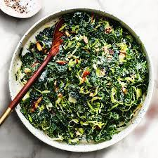

Kale and Brussel Sprout Salad

This is one salad you won't want to stop eating and will actually fill you up!
This easy-to-make salad is packed with nutrient dense super foods, fiber, and tastes so good you won't want to stop. Better yet, you can make it a matter of minutes and it lasts for days in the fridge.
Ingredients
Dressing
- 1/4 c. fresh lemon juice
- 2 tbsp. Dijon mustard
- 1 clove minced garlic
- 1 tbsp. minced shallot
- 1/4 c. extra-virgin olive oil
- 1/4 tsp. kosher salt (more to taste)
- pinch of freshly ground black pepper to taste
Salad
- 2 bunches of Kale, center stem discared, leaves thinly sliced
- 12 oz. brussel sprouts, trimmed, finely grated or shredded with knife
- 1/3 c. chopped almonds with skins
- 1 c. finely grated parmesan cheese
Steps:
- Combine lemon juice, Dijon mustard, shallot, garlic, 1/2 tsp. salt, and a pinch of pepper in a small bowl. Stir to blend; set aside to let flavors meld.
- Mix together sliced kale and shredded brussel sprouts in a large bowl.
- Slowly whisk olive oil into lemon juice mixture; toss or massage to coat. Season lightly with salt and pepper. Garnish with almonds.
- Enjoy!